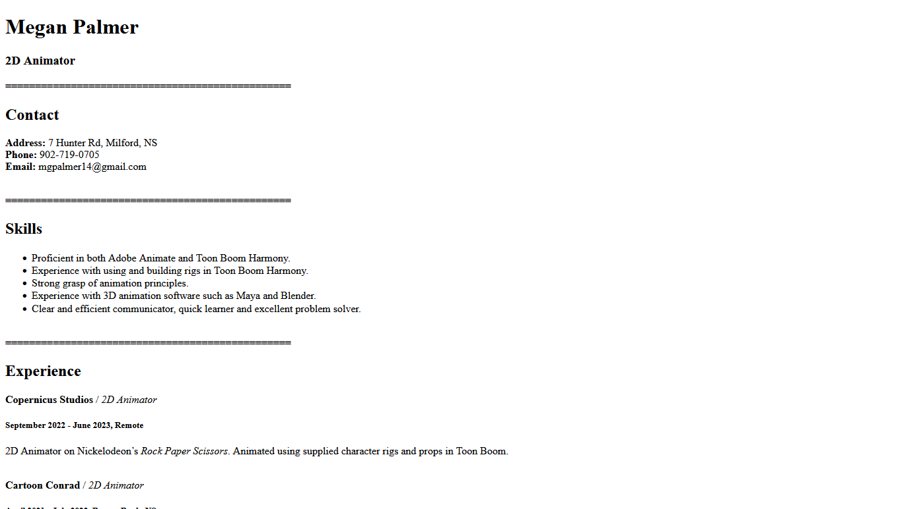
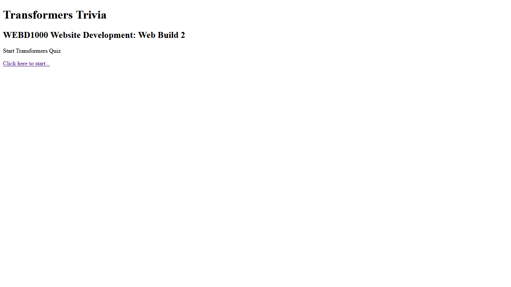
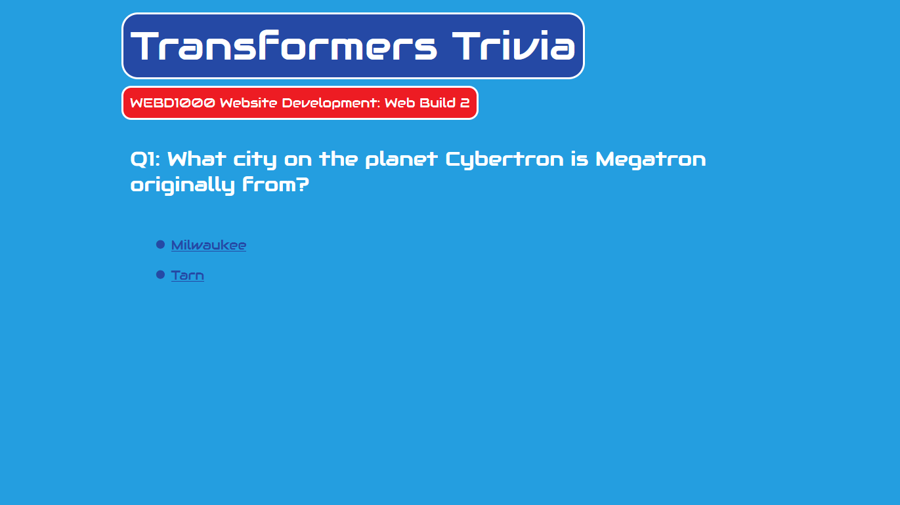
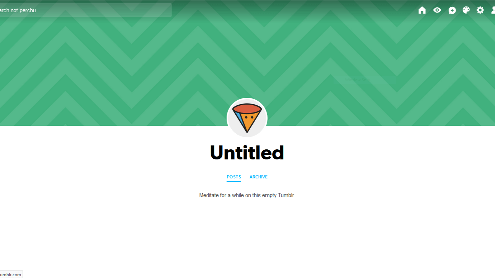
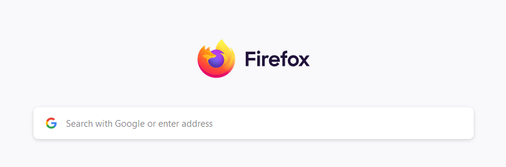

Web Build 1: Resume

This is my first web build, made in September 2024 with html in VSCode. The challenge was to create a resume as a web page using the html skills we had learned in class.
Web Build 2: Navigation

This is my second web build. For this, we were challenged to create a trivia website using multiple pages in order to explore navigation. I did mine with trivia about the Transformers franchise. It was made with html in VSCode.
Web Build 3: Styling

This is my third web build. Here I have taken my second web build and used css to style it. It was made with html in VSCode.
Tumblr Blog

This is a tumblr blog that I made myself from scratch using the built-in tools on the website. It is 100% not just the default tumblr blog layout and I 100% made it myself I promise.
Greatest Web Page of All Time
Here you can see that I have created the greatest webpage of all time. Unfortunately, since this is a still image, you can't see how most of the backgrounds are animated and flash rapidly(So cool, right!?). This was absolutely made by me and not by an 18-year-old woman from New York in 2002.
Firefox

I made the web browser Firefox in 2002. Just trust me.